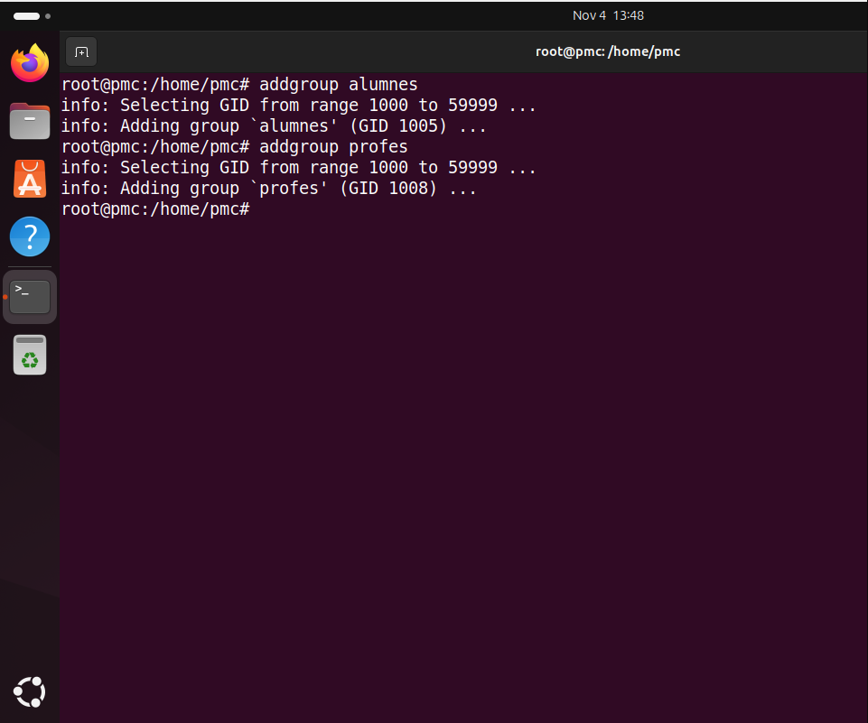
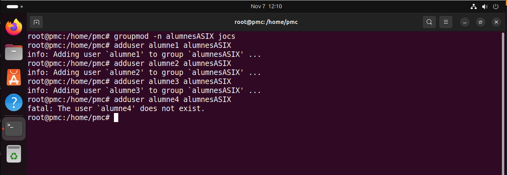
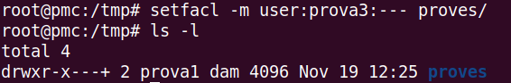

Gestió i Identificació de Processos
Alhora d'identificar procesos podem utilitzar la comanda pstree. Però, per no tindre incompatibilitats utilitzarem la comanda sudo su per estar en superadmin.

Ara si utilitzem pstree -h "usuari" podrem veure els procesos executats per l'usuari indicat (en el meu cas, pmc)

A més a més, utilitzant la comanda pstree -h -p "usuari" podem a més veure els procesos de l'usuari amb el ID de cada proces.

NF4-USUARIS-LINUX
Definicions
Què és un usuari? Podem treballar amb més d'un usuari simultàniament? Un usuari és una entitat creada per poder gestionar un sistema opertiu, executar comandes, gestionar directoris, etc
Què és un grup i quina utilitat té agrupar usuaris en grups? Un grup és una agrupació d'usuaris el qual serveix per aplicar permisos i restricción molts usuaris al mateix temps.
Versió gràfica


-
/etc/passwdAquest fitxer conté informació sobre els usuaris del sistema. Cada línia representa un usuari i conté diversos camps separats per dos punts : amb informació bàsica. -
/etc/groupAquest fitxer emmagatzema la informació sobre els grups del sistema. Cada línia representa un grup amb camps separats per dos punts : -
/etc/shadowAquest fitxer conté les contrasenyes xifrades dels usuaris, així com altres paràmetres relacionats amb l'expiració de la contrasenya. Només pot ser llegit per l'administrador del sistema per qüestions de seguretat. -
/etc/gshadowAquest fitxer emmagatzema les contrasenyes dels grups i altres configuracions d'accés als grups. Només pot ser llegit per l'administrador.
En el fitxer /etc/shadow, el segon camp pot contenir símbols especials que indiquen l'estat de la contrasenya de l'usuari:
El * indica que el compte està bloquejat. Quan el sistema troba un * en aquest camp, es considera que no es pot iniciar sessió amb aquest compte.
El ! també indica que el compte està bloquejat, però en aquest cas la contrasenya encara és present però està desactivada. Això es fa per impedir l'accés sense eliminar la contrasenya completament.
En el fitxer /etc/shadow, el tercer camp, que correspon a la data de l'últim canvi de contrasenya, s'anomena "epoch". Aquesta data es calcula com el nombre de dies transcorreguts des de l'1 de gener de 1970, una data base coneguda com Unix Epoch.
Crear nous usuaris


Comprovació:

Crear grups
-
Seguint aquest exemple, crea 2 grups (alumnes i profes) amb la comanda addgroup.
 -
Esborra el grup de profes

-
Crea el grup jocs

-
Afegir usuari a un grup
Modificació
- Modifica el nom del grup a "Jocs" a "alumnesASIX"

- Modifica la paraula de pas d'alumne1
- Modifica el nom d'alumne4 per alumne2
- Afegeix dintre del grup alumnesASIX als 3 alumnes 
- Treu a l'alumne2 del grup O tambés es podria utilitzar:

- Afegeix a l'alumne1 al grup de jocs, però com a administrador i alumne2 com a usuari normal
- Fes que l'alumne1 tingui com a grup principal el grup d'alumneASIX
- Quina és la diferència entre el que apareix al fitxer /etc/group i el que apareix al fitxer /etc/gshadow?
/etc/group: Emmagatzema informació bàsica sobre els grups, el nom del grup, l’identificador de grup (GID) i els membres associats.
/etc/gshadow: Emmagatzema la informació confidencial del grup, la contrasenya encriptada del grup i els usuaris que tenen permisos per administrar-lo.
Bloqueig
- Bloqueja un usuari i comprova que no pots accedir amb ell

- Ara desbloqueja'l i comprova que ja pots tornar a accedir amb ell

- Per a què pot servir bloquejar un usuari? Podem voldre a bloquejar els usuaris per ocultar-los o impedir l'utilització d'aquests per raons de seguretat.
Caducitat de les paraules de pas
- M (Maximum days): Defineix el nombre màxim de dies abans que la contrasenya caduqui i l’usuari estigui obligat a canviar-la.
- m (Minimum days): Defineix el nombre mínim de dies abans que un usuari pugui canviar la seva contrasenya després d’haver-la canviat.
- W (Warning days): Defineix el nombre de dies d'avís abans de la caducitat, en què el sistema notificarà a l'usuari que ha de canviar la contrasenya.
- E (Expire date): Permet especificar una data exacta per a la caducitat del compte de l'usuari. Per exemple, -E 2024-12-31 caducaria l'usuari el 31 de desembre de 202
- M 30: Estableix la caducitat de la contrasenya a 30 dies. Això vol dir que l’usuari haurà de canviar la seva contrasenya cada 30 dies.
- m 7: Estableix el mínim de dies abans que l’usuari pugui canviar la seva contrasenya de nou, que en aquest cas és 7 dies.
- W 5: Estableix que l’usuari rebrà un avís 5 dies abans que caduqui la seva contrasenya.
Primer, amb la comanda adduser provachage creem el usuari de proves que utilitzarem.
Desprès amb la següent comanda:
 Apliquem la configuració al usuari
Apliquem la configuració al usuari
Finalment, amb chage -l provachage verifiquem la configuarció.

Editar valors de nous usuaris
UID_MIN
UID_MAX
Dintre d'aquest arxiu podem configurar els paràmetres quan es crea un nou usuari. D'aquesta manera tots el usuaris que creem tindran aplicats els paràmetres que nosaltres hem marcat. Llavors farem una prova modificant els següents paràmetres:SHELL=/bin/bash
HOME=/var
SKEL=/etc/skel

Comprovació:
Afegir usuaris al sudo
La comanda següent serveix per afegir un usuari al group sudo.
D'altra banda, aquesta comanda serveix per treure al alumne1 del group sudo.
Borrar usuaris
Al moment de voldre eliminar un usuari del sistema tenim dues maneres. La primera és amb la següent comanda per borrar l'usuari SENSE LA SEVA /HOME
D'altra banda, amb la següent comanda borrem l'usuari i la seva /home al mateix temps

Enllaçar
ls -lEditar ruta terminal per defecte
Edite'm la fila PWD='var' perquè quan s'obrigue una nova terminal, la ruta per defecte serà /var.

Dintre de l'arxiu agregarem la comanada rm -r /home/$USER/Baixades/* per a que quan accedim a un usuari nou, borri directament els arxius de la seva carpeta /Baixades
Permisos "normals" UOG
Llenguatge octal per calcular permissos
(-) significa que és un fitxer
(d) significa que és un directori/carpeta
(r) read
(w) write
(x) execute
Podem veure amb la comanda ls -l el llistat d'arxiu/directoris de la carpeta actual amb els seus permisos i més informació.

Amb la comanda chgrp -R group /carpeta podem donar els permisos normals a un grup específic per a la carpeta.
UMASK
Permisos especials
Sabem que amb la comanda chmod ... podem modificar els permisos sobre les posicions dels núemeros en octal.
- Primera posició: l'usuari propietari.
- Segona posició: grups.
- Tercera posició: altres.

Ara, podem agregar aquests permisos a carpetes compartides amb les comandes següent:
Per a aplicar aquest permisos a un arxiu en una carpeta compartida ho podem fer amb:
Desprès, amb:


- Situa't al teu directori personal (/home/usuari). Crea utilitzant el teu usuari estàndard (no root) un fitxer buit anomenat ex1.txt.
- Qui és el usuari propietari del fitxer? Com pots veure aquesta informació?
- Qui és el grup propietari del fitxer? Com pots veure aquesta informació?
- Situa't al teu directori personal (/home/usuari). Crea utilitzant amb l'usuari root (executant amb sudo) un fitxer buit anomenat ex2.txt.
- Qui és el usuari propietari del fitxer? Com pots veure aquesta informació?
- Qui és el grup propietari del fitxer? Com pots veure aquesta informació?
- Utilitzant notació octal (000, 010, …), crea un fitxer ex7.txt al teu directori personal i assigna-li amb una sola execució els següents permisos:
- Permís de lectura i escriptura per a l'usuari.
- Permís de només lectura per al grup.
- Cap permís per a altres.
- Utilitzant notació octal (000, 010, …), crea un fitxer ex8.txt al teu directori personal i assigna-li amb una sola execució els següents permisos:
- Permís de lectura, escriptura i execució per a l'usuari.
- Permís d'escriptura per al grup.
- Permís d'execució per a altres.
- Utilitzant notació octal (000, 010, …), crea un fitxer ex9.txt al teu directori personal i assigna-li amb una sola execució els següents permisos:
- Permís de lectura, escriptura i execució per a l'usuari.
- Permís de lectura i escriptura per al grup.
- Permís de només lectura per a altres.
- Utilitzant notació octal (000, 010, …), crea un fitxer ex10.txt al teu directori personal i assigna-li amb una sola execució els següents permisos:
- Permís activat SUID.
- Permís de lectura i execució per a l'usuari.
- Permís de sols lectura per al grup.
- Cap permís per a altres.
- Utilitzant notació octal (000, 010, …), crea un fitxer ex11.txt al teu directori personal i assigna-li amb una sola execució els següents permisos: a. Permisos activats SUID i GUID. b. Permís de lectura per a l'usuari. c. Permís d'escriptura per al grup. d. Permís de lectura per a altres.
-
Utilitzant notació octal (000, 010, …), crea un fitxer ex12.txt al teu directori personal i assigna-li amb una sola execució els següents permisos: a. Permís sticky bit activat. b. Permís de lectura i execució per a l'usuari. c. Cap permís per al grup. d. Permís de lectura per a altres.
-
Crea una carpeta pt13 al teu directori personal, i crea els fitxers ex13a.txt i ex13b.txt dintre de la carpeta pt13. Utilitzant notació octal (000, 010, …), estableix els següents permisos a la carpeta pt13, de forma que es propaguen automàticament a tots els fitxers, i demostra-ho:
- Permís de lectura, escriptura i execució per a l'usuari.
- Permís de lectura i escriptura per al grup.
- Permís de lectura i escriptura per a altres.
- Utilitzant notació
- Afegeix permís d'execució per a l'usuari
- Afegeix permís d'escriptura i execució per al grup.
-
Utilitzant notació
- Afegeix permís d'escriptura per a tots els tipus d'usuari.
-
Utilitzant notació
- Elimina permís d'escriptura per a l'usuari.
- Elimina permís de lectura per als altres.
- Utilitzant notació
- Estableix els permisos d'escriptura i d'execució per a tots els tipus d'usuari.
- Crea com a administrador el fitxer pt22.txt (sudo) al teu directori personal i a continuació fes:
- Que el teu usuari habitual es faci usuari propietari del fitxer.
- Que el teu grup habitual es faci propietari del fitxer.
ACLs
getfacl proves/ MOSTRA INFORMACIÓ
setfacl -m user:prova3:--- proves/ AFEGIR RESTRICCIONS
setfacl -b proves/ BORRAR RESTRICCIONS
-
Amb el teu usuari crea la carpeta exercicis i dóna-li permisos 770 de forma recursiva
-
Comprova els permisos de llista acl
-
Crea una ACL per a aquesta carpeta de forma recursiva de tal manera que l’usuari vesper tingui tots els permisos
-
Comprova-ho
-
Torna amb el teu usuari i dintre d’aquesta carpeta crea a ara una altra que es digui repas
-
Tornat a posar com a vesper i crea dintre de la carpeta repas un arxiu anomenat ex1
- Esborra els permisos ACL per a la carpeta exercicis quedant només els UGO
-
-
Crea un grup anomenat pugs i afegeix dintre l’usuari vesper
-
Crea un altre usuari anomenat perrete
-
Amb el teu usuari crea un arxiu de text amb permisos 770
-
Crea una ACL per a aquest arxiu de forma que els usuaris del grup pugs puguin llegir-lo i modificar-lo i la resta d’usuaris res. Comprova-ho amb els dos usuaris que tens, vesper i perrete

CREACIÓ DE PARTICIONS I FORMATS
Teoria:
Estructura de la informació - Mida sector - Mida block - Fragmentació interna: Espai desaprofitat dels blocks o clusters //solució: fer els bloc més petits - Fragmentación externa: Arixus guardats en molt arxius a la vegada, aixo fa que la velocitat de lectura i escriptura es reduixque. Tipus de formateig
Sistemes de fitxers
La comanda fdisk -l servei per mirar el llistat de partiions muntados i no muntas que tenim al sistema.

A continuació, si volem muntar una nova partició ens hem d'adentra al menú de creació de particions. Això ho aconseguim amb la següent comanda (en el meu cas, la ruta del disc es /dev/sda):

Al moment de ja estar en el menú, per començar a configurar amb la lletra n creem una nova partició. utilitzem el elements per defecte menys el tamany del segon sector, fiquem la meitat.

warn
Un sector es la unitat mínima física en la que es guarden les dades (unitat per defecte =512) (sector)
El sistema operatiu funciona = Mida del blocs (cluster) és la unitat mínima 4.096 bytes // podem canviar la mida dels blocs, però no dels sectors.
du -b arxiu //veure la mida dels arxius du -sh arxiu //veure la mida real dels arxius
df -T // e4defracg -c /dev/sda2 //comprobar si fa falta defragmentar el disc
Format d'alt nivell: no borra els fitxers, borra els sistema d'arxius (no els borrar pero els oculta per a tu), ignora sectors.
Format normal: no borra els fitxers, borra els sistema d'arxius. Pero, si hi han sectors defectuosos no els guarda.
Format baix nivell: borra fitxers, borra sistemes d'arxiu i no comprova res. BORRA TOT, COM SI FOS UN DE FÀBRICA.
EXPLICAR: SISTEMES DE FITXERS Tipus: ext4
GPT, MBR DISCS DURS